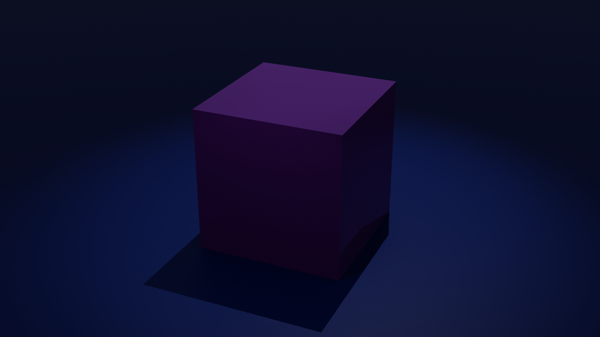

creation

For years, I’ve been fascinated by shaders
they’re a beautiful mix of art and technical skill.
In the 3D world, shaders are incredibly versatile; like filters, they can be applied to any scene.
But they go beyond 3D art
they’re used in robotics, medical imaging (IRM), and nearly every
modern camera.
It’s a field that excites me deeply.
One thing I’d love to do is CFD (Computational Fluid Dynamics).
It's the use of math to simulate fluid behavior like air, water, or composite materials.
Ever since I saw videos about it, I can’t get it out of my head.
It’s the perfect balance of creativity and complexity.
Sadly, it’s not very accessible due to the level of math required, so I’m currently studying at
university and learning to be resilient.